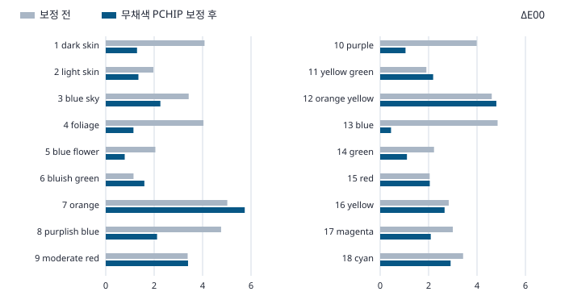

핵심 요약
- 행렬 프로파일과 카메라 Natural JPEG 사이에서 유채색 18개 평균 ΔE00는 3.264에서 2.165로 줄었습니다. 가장 큰 패치 오차는 5.021에서 5.740으로 늘었고, 보정 후에는 7번 주황 패치의 차이가 가장 컸습니다.
- 같은 방법을 Lightroom 대조군에 적용하니 톤만 바꾼 출력의 평균 ΔE00는 1.520에서 0.006으로 줄었습니다. 채도 표를 바꾼 출력에는 5.926이 남았습니다.
- 유채색은 톤 곡선 계산에서 제외했습니다. 모든 패치는 같은 RAW에서 왔으므로 결과의 범위는 이 장면과 촬영 설정에 한정됩니다.
확인 기존 출력에서 다시 잰 값
- 카메라 Natural 내장 JPEG와 Lightroom ProPhoto RGB 16비트 TIFF의 등록 패치
- 톤·채도 대조군의 24패치 색차와 유채색 18패치의 보정 후 오차
모델 오프라인 계산
- 무채색으로 정한 단조 곡선과 선형 ProPhoto RGB의 색상각을 보존하는 톤 적용식
- ICC 상대 색도 변환과 패치 안쪽 픽셀의 Lab 중앙값
미확인 남은 범위
- 카메라와 Lightroom 내부 처리 단계별 원인, 다른 장면과 조명의 재현성
- 차트 참값과의 절대 색 정확도, 이 곡선을 DCP로 넣었을 때의 출력
무채색 6개에서 톤을 구하고 유채색 18개에서 평가
- 등록된 픽셀RAW #1376에서 카메라 내장 JPEG를 추출하고 같은 장면의 TIFF와 맞춥니다.
- 무채색 19–24번패치별 Lab 중앙값에서 상대 휘도 Y를 구하고, 양 끝점을 고정한 단조 곡선을 맞춥니다.
- 유채색 1–18번선형 ProPhoto RGB에 곡선을 적용한 뒤 Lab 색차를 잽니다.
패치 안쪽 200×200 픽셀을 사용했습니다. TIFF에는 내장 ICC를, 카메라 JPEG에는 DNG 메타데이터가 가리키는 sRGB를 적용해 D50 Lab으로 바꿨습니다. JPEG와 행렬 TIFF를 맞춘 뒤, 위치 맞춤에 쓰지 않은 15개 격자 교차점에서 확인한 최대 잔차는 2.707픽셀이었습니다. 패치 좌표와 변환 절차
무채색 여섯 점에 (0, 0)과 (1, 1)을 더해 구간별 선형 보간과 단조 3차 보간(PCHIP)을 비교했습니다. 픽셀의 가장 낮은 채널과 높은 채널에 같은 곡선을 적용하고, 중간 채널은 두 끝값 사이의 원래 상대 위치를 유지했습니다. 이 방식은 선형 ProPhoto RGB의 HSV 색상각을 보존합니다. 식은 Adobe 공개 DNG SDK 예제 렌더러의 RefBaselineRGBTone을 참고했고, 곡선은 이미 현상된 TIFF에 적용했습니다. Adobe DNG SDK
톤 대조군은 맞았고 카메라 JPEG에는 차이가 남았습니다
| 비교 | 보정 전 | 선형 보간 | PCHIP |
|---|---|---|---|
| 행렬 프로파일 → 카메라 Natural JPEG | 3.264 | 2.143 | 2.165 |
| Camera Natural → 카메라 Natural JPEG | 1.438 | 1.193 | 1.258 |
| Adobe Standard → 카메라 Natural JPEG | 3.987 | 3.214 | 3.153 |
| 항등 톤 → Lift 톤 | 1.520 | 0.025 | 0.006 |
| 항등 LookTable → 채도 0.8 | 5.985 | 5.930 | 5.926 |
카메라 JPEG를 기준으로 행렬 계열의 항등·Lift·ACR3 TIFF에도 각각 톤을 맞추면 평균 ΔE00는 2.165–2.169였습니다(PCHIP). 톤 대조군은 같은 행렬의 곡선 태그만 바꾼 출력이고, 채도 대조군은 LookTable의 채도 배율만 바꾼 출력입니다. 톤 곡선 대조 · LookTable 대조

행렬 TIFF와 JPEG의 패치별 픽셀 색상각 중앙값은 절댓값 기준 중앙 2.446°, 최대 5.743° 차이가 났습니다. 톤 대조군의 같은 최대치는 0.00171°, 채도 대조군은 0.00257°였습니다. 채도만 바꾸는 표도 색상각을 유지할 수 있으므로 색상각과 ΔE00를 함께 봤습니다. 이 각도는 선형 RGB에서 얻은 진단값입니다.
행렬 TIFF의 보정 후 평균 ΔE00는 중심 100×100 픽셀에서 2.184, JPEG에 별도의 sRGB ICC를 지정한 비교에서는 2.162였습니다. Lightroom sRGB 출력에서 채널 끝값이 검출된 패치 네 개를 제외해도 평균 2.011이 남았습니다. 이 조건에서는 색상각을 보존하는 톤만으로 카메라 JPEG의 출력을 설명하기 어렵습니다. 패치별 측정값과 검증 수치
한 장에서 구분할 수 있는 범위
무채색을 하나씩 제외해 다시 맞췄을 때 행렬→JPEG의 무채색 예측 평균 ΔE00는 1.019였습니다(PCHIP). 유채색 패치의 중앙 RGB는 모두 무채색 매듭의 입력 범위 안에 있었습니다. 모든 패치는 한 센서, 한 조명, 한 노출에서 얻었습니다.
Lightroom XMP는 모두 As Shot을 기록했습니다. 온도와 색조 표기는 행렬 계열이 5200 K/+2, Camera Natural과 Adobe Standard가 5300 K/−2입니다. 카메라는 5000 K와 노출 보정 −0.7 EV를 기록했습니다. 비교는 완성된 출력을 대상으로 하므로 남은 오차를 WB, 색 행렬, 보정 표, 색역 처리나 JPEG 처리 중 하나로 배정할 수 없습니다.
모드별 효과를 비교하려면 같은 K-3 II RAW에서 Natural과 다른 내장 룩으로 카메라가 현상한 JPEG 한 쌍이 필요합니다. WB, 노출, 그림자 보정, 출력 색공간을 고정하고 다른 장면이나 조명에서 얻은 모드 쌍을 검증용으로 남기면, 모드 차이가 반복되는지 확인할 수 있습니다.
재현 방법
Python 3.11 이상, NumPy, SciPy, OpenCV, Pillow, scikit-image, tifffile, ExifTool, LittleCMS의 tificc가 필요합니다. --scratch는 이미 만들어 둔 작업 폴더이고 --output은 새 JSON 경로입니다. 실행할 때 -O를 사용하지 않습니다.
| 경로 인수 | 파일 또는 하위 폴더 | 출처 |
|---|---|---|
--samples | pentax-k3ii-1376.dng, pentax-k3ii-1376-preview.jpg | raw.pixls.us #1376, CC0. DNG의 SubIFD1:PreviewImage에서 JPEG를 추출합니다. RAW 출처와 추출 안내 |
--exports | matrix-test-prophoto/, camera-natural-prophoto/, adobe-standard-prophoto/, matrix-test/ | 기존 RGB16 TIFF. matrix-test/는 JPEG에 적용할 별도 sRGB ICC를 제공하는 입력입니다. |
--exports | tone-identity-prophoto/, tone-lift-prophoto/, tone-acr3-prophoto/ | 톤 대조 TIFF |
--exports | look-identity-prophoto/, look-sat80-prophoto/ | LookTable 대조 TIFF |
python tools/check_color_tone_residual.py --samples samples --exports exports --scratch scratch --output tone-residual-replay.json검증기는 RAW에서 추출한 JPEG와 제공한 JPEG가 모두 기록된 SHA-256을 갖는지 확인합니다. TIFF 9개도 SHA-256을 대조합니다. ProPhoto TIFF 8개의 ICC, XMP 프로파일 이름·지문, 현상 설정을 읽어 비교합니다. JSON의 DCP 해시는 기존 프로파일 출처 기록에서 가져옵니다. 재현 스크립트 · 기준 결과 JSON
근거와 참고 자료
- 기존 렌더 비교 · 톤 대조 측정 · LookTable 대조 측정
- Adobe DNG SDK · 분석에 사용한 Build 2768의 아카이브와 소스 해시는 결과 JSON에 있습니다.
- ISO/CIE 11664-6:2022 CIEDE2000